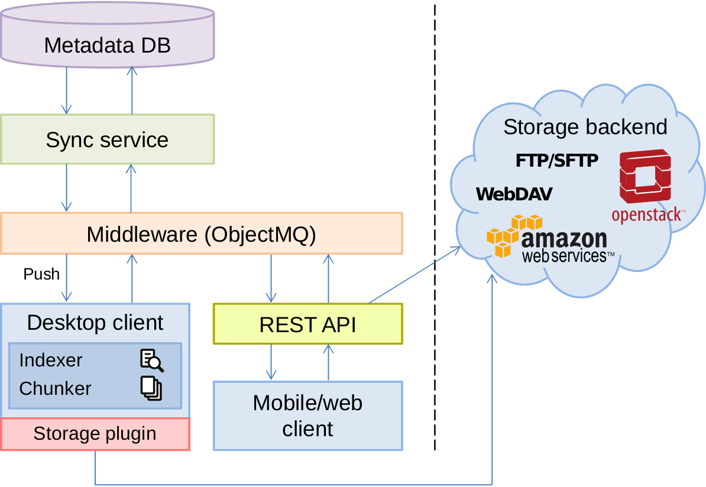

StackSync
Overview
| StackSync website | http://stacksync.org |
| StackSync Documentation | http://stacksync.org/documentation |
| StackSync Synchronization service | https://github.com/stacksync/sync-service/releases |
| StackSync Store API implementation | https://github.com/stacksync/swift-API |
| StackSync Desktop Client | https://github.com/stacksync/desktop/releases |
| StackSync Web Client | https://github.com/stacksync/web |
| StackSync Management Interface | https://github.com/stacksync/manager |
| StackSync Android Client | https://github.com/stacksync/android |
| StackSync Cloud ABE branch | https://github.com/stacksync/desktop/tree/abe |
| StackSync Hybris integration | https://github.com/pviotti/stacksync-desktop |
| StackSync PrivySeal | https://privyseal.epfl.ch/#!/ |
Introduction
StackSync is a Dropbox-like open source synchronization tool that runs on top of OpenStack Swift. StackSync is specially designed to take care of organizations real needs with features like scalability, openness, security and the typical ease of use offered by personal clouds.
In general terms, StackSync can be divided into three main blocks: clients, synchronization service(a.k.a. Synchronization service), and the storage back-end. An overview of the architecture with the main components and their interaction is shown in the figure below.

As we can see in the figure above, the storage back-end is separated from the rest of the architecture by a line. This means that StackSync can be used with external storage back-ends such as Amazon S3 or RackSpace. This enables StackSync to fit different organization and be offered in three different configurations:
- Public Cloud. Data and metadata is stored in a public storage provider such as Amazon or Rackspace.
- Private Cloud. StackSync is installed on-premise. Data and metadata is stored on the company’s infrastructure.
- Hybrid Cloud. Data is stored in a public storage provider and metadata is kept inside the company’s infrastructure. This allows organizations that sensible information is stored on-premise, while raw data is stored encrypted on a third-party storage service.
Last Release Features
Sync your files
Keep your files synced across all your devices.
Sharing
Share your files with your loved ones.
Adaptable to your needs
StackSync can adapt to your organization’s needs. It can be installed on-premise, on a public Cloud, or on a hybrid architecture.
Scalability
StackSync is designed to handle large amounts of users.
Wherever you are
With the mobile apps and web apps you can access your files when you are on the move.
Quota Service
It helps to assign a quota limit for each user. In this way, the admin has the storage controll.
Administration Interface
It allows to admin to create user groups, add new users, remove users, assign quota to users.